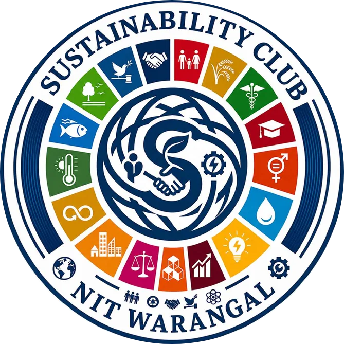

Find Your Way Around NITW
Junior Induction · 17 Aug
Search or filter, then tap "Directions" to open it in Google Maps.
All
Departments
Hostels
Landmarks
Tap anywhere on a card to open directions in Maps